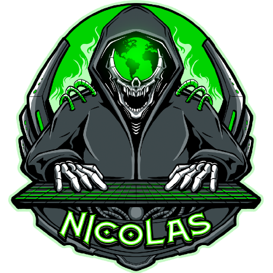

Grado en Ingeniería Informática
UOC — Universitat Oberta de Catalunya. Formación universitaria en curso orientada a software, sistemas, redes e ingeniería del dato.
Grado · UOCCargando 0%
Disponible para nuevos retos
> |
Desarrollador web, administrador de sistemas y formador de formadores. Técnico Superior en Desarrollo de Aplicaciones Web, especializado en Ciberseguridad y estudiante de Ingeniería Informática.
arrastra la figura 3D

Desarrollador web · Admin. de sistemas · Formador
Soy técnico en Sistemas Microinformáticos y Redes (SMR), Técnico Superior en Desarrollo de Aplicaciones Web (DAW) y estoy especializado en Ciberseguridad. Actualmente curso Ingeniería Informática en la UOC y desarrollo mi carrera entre el Cabildo de Fuerteventura, la administración de sistemas y el desarrollo de software.
Me muevo con la misma soltura en el front-end (HTML, CSS, JavaScript, React) que en el back-end (PHP, Laravel, Node.js, SQL, MongoDB) y en la parte de sistemas y redes. Además, soy formador de formadores y tutor de teleformación, así que disfruto tanto creando producto como enseñando a otros a hacerlo.
Programar me entretiene: me gusta convertir ideas en experiencias, cuidar los detalles y resolver problemas. Este portafolio es una muestra de ello — efectos, animaciones, una escena 3D y mis proyectos abiertos en ventanas flotantes.
Administrador de sistemas, programador, docente y tareas administrativas.
Administrador de sistemas y apoyo administrativo.
Administrador de sistemas, gestión documental y financiera.
Programador y soporte técnico.
Gestión de datos, atención al público y apoyo administrativo.
UOC — Universitat Oberta de Catalunya.
Formación profesional de especialización.
Técnico Superior en Desarrollo de Aplicaciones Web.
Técnico en Sistemas Microinformáticos y Redes.
UOC — Universitat Oberta de Catalunya. Formación universitaria en curso orientada a software, sistemas, redes e ingeniería del dato.
Grado · UOCFormación profesional de especialización: hacking ético, análisis de vulnerabilidades, respuesta ante incidentes y seguridad de sistemas y redes.
EspecializaciónDesarrollo de Aplicaciones Web: front-end, back-end, bases de datos, despliegue y aplicaciones multiplataforma.
Grado SuperiorSistemas Microinformáticos y Redes: montaje y mantenimiento de equipos, redes locales, sistemas operativos y soporte técnico.
Grado MedioCertificación de docencia para la formación profesional para el empleo: programación, impartición y evaluación de acciones formativas.
DocenciaTutor-formador en teleformación: dinamización de aulas virtuales, tutorización en línea y uso de plataformas de e-learning.
E-learningTeleformación para docentes, dinamizador juvenil, ciberbullying y Fundación Sergio Alonso (FP Plus Informática).
ComplementariaHTML5, CSS3, Flexbox, Grid, Responsive Design, transiciones CSS3, JavaScript (básico e intermedio), C++, pseudocódigo, SQL y maquetación web.
Certificación Cisco (redes y switching), fundamentos de TCP/IP, Ethical Hacking, Hacking Web, herramientas Blue Team / Red Team, hacking con buscadores y seguridad tecnológica (COITT).
Certificación MOS (Microsoft Access), Excel (básico, avanzado y funciones), herramientas digitales en el aula, gestión documental, archivo y atención al cliente.
Cada proyecto se abre en una ventana flotante: puedes arrastrarla, minimizarla, maximizarla y cambiar su tamaño, con acceso directo a su código en GitHub.
No se encontraron proyectos. Prueba otra búsqueda.
¿Buscas un desarrollador web, alguien que administre tus sistemas o un formador para tus cursos? Escríbeme y te respondo lo antes posible.